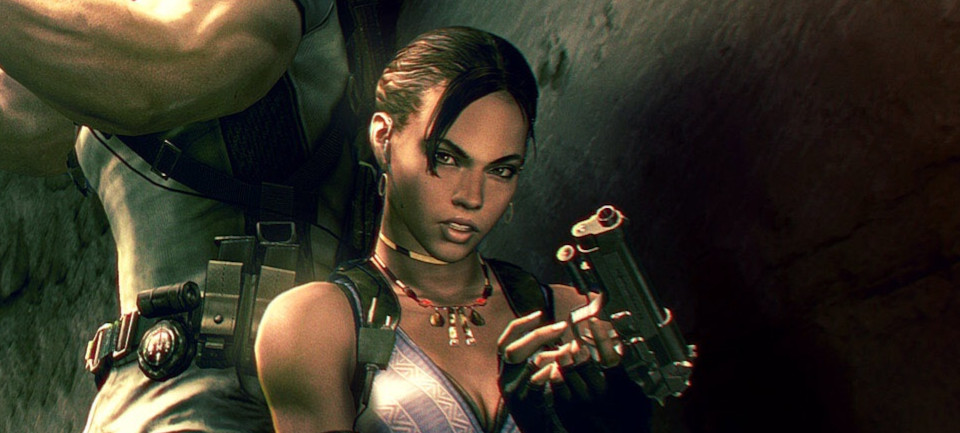

Sheva Alomar
Sheva grew up in West African region which was associated with guerrilla fighters operating against the national government. Some 80% of the town's population was employed by Umbrella's No.57 Plant, who provided wages which, while still low by national standards, were steady enough for Sheva's family live on comfortably.
Around 1994 when Sheva was only eight years old, the Umbrella plant suffered a containment failure and the locals who had unknowingly been aiding in the development began rampaging around the plant. With help from the army, Umbrella's anti-B.O.W. soldiers destroyed the factory to rid the bioweapons and massacred the town to silence witnesses.
Sheva survived the attack, and was taken in by her uncle, who hoped for compensation to support her and his seven children but was offered nothing. Sheva ran away from her uncle's home due to malnutrition, and journeyed back to her home. On her way she was picked up by a convoy of guerrilla fighters, who believed the containment failure at the Umbrella plant was deliberate in order to test out their completed bioweapons.
Over the next seven years Sheva lived with the guerrillas, fulfilling menial roles such as laundry and, when older, obtaining materials from the nearby town. Around the year 2001 and at the age of fifteen, Sheva was approached by a government agent, who revealed to her the guerrillas were attempting to purchase bio-weapons from Umbrella in their fight against the government.
At a church, he introduced Sheva to an American official, who offered she and the guerrillas amnesty if she gave them proof of the bio-weapons deal and a means of capturing the guerrillas. Sheva agreed to do so, and three days later unlocked the door to their compound and used a recording at the meeting.
Everyone in the compound was immediately arrested and taken to the American consulate, and true to the official's word everyone but the bioweapons dealer was released. Sheva was offered a new life in the United States, and handed a passport and a seat on a private jet with the official as her legal guardian.